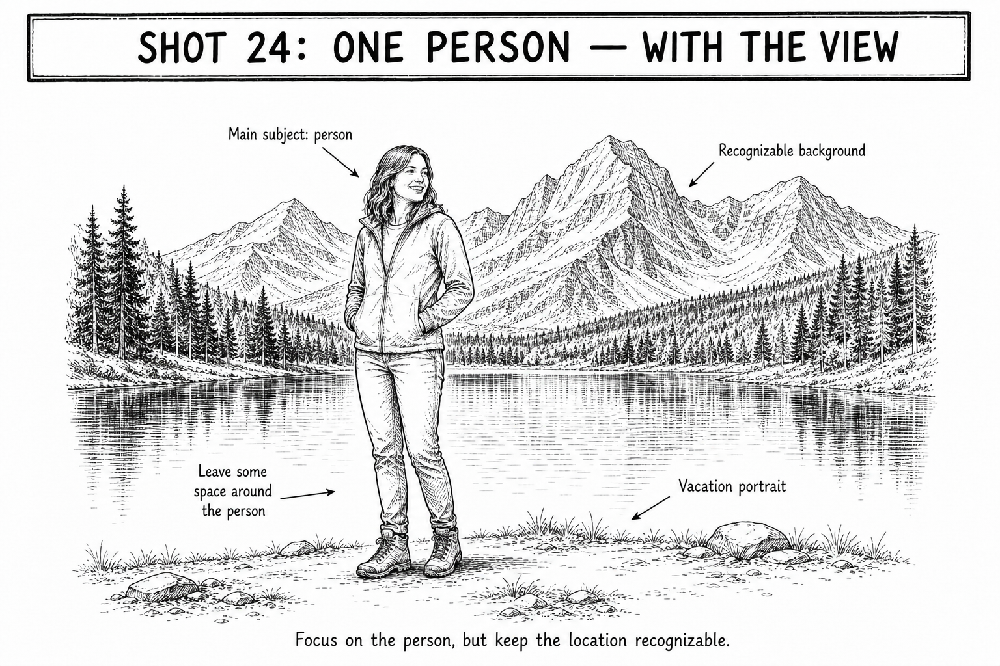

Start here
Av | Aperture f/5.6 | ISO Auto
How to take it
- Place the person near one side of the frame, facing into the scenery.
- Keep the horizon level and leave open space in front of their gaze.
- Put the AF point on the person's nearer eye or face.
- Half-press and confirm the face is sharp.
- Take one portrait-height frame and one wider landscape frame.
Focus this shot
Place it: Put the AF point on the person's nearer eye or face.
Look for: The face should look crisp when focus confirms.
If this happens
| Person is too small | Walk closer before zooming so the person still feels present. |
|---|---|
| View is blocked | Move the person to one side and give the scenery open space. |
| Face is dark | Turn the person toward open sky or brighten exposure slightly. |
| Horizon is tilted | Straighten the camera before taking another frame. |
Tips
- Let the person look into the view for the most natural version.
- Take a second frame with a little more scenery than you think you need.